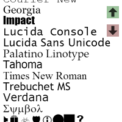
Fonts!!
Created 2014-03-22 · saved 2014-03-23
329 public programs, with creation dates and latest saved-revision dates. All source snapshots saved; no programs executed. Includes exercises, variants, and spin-offs. Creation dates span 2013–2023.
Your shortlist includes repeated-title variants. Source links show the latest publicly saved code as plain text.

Created 2014-03-22 · saved 2014-03-23
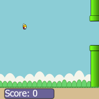
Created 2014-02-04 · saved 2014-11-14
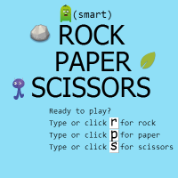
Created 2014-08-10 · saved 2014-08-11
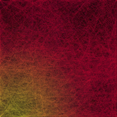
Created 2014-02-18 · saved 2014-06-01
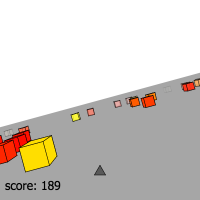
Created 2014-03-03 · saved 2015-05-24
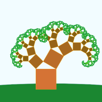
Created 2013-11-02 · saved 2013-11-03
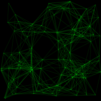
Created 2014-07-15 · saved 2014-07-15
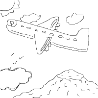
Created 2014-06-15 · saved 2014-08-11
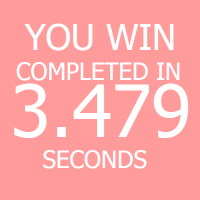
Created 2014-08-11 · saved 2014-08-11
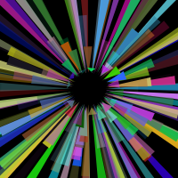
Created 2013-12-22 · saved 2014-06-01
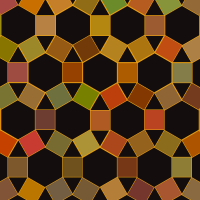
Created 2013-11-03 · saved 2013-11-03
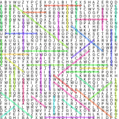
Created 2014-10-31 · saved 2014-10-31
Created 2013-12-19 · saved 2014-06-11
Created 2013-12-22 · saved 2014-06-01
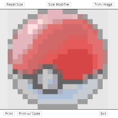
Created 2014-06-23 · saved 2014-06-23
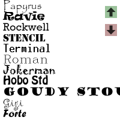
Created 2014-05-10 · saved 2014-05-10
Created 2013-07-14 · saved 2013-07-14
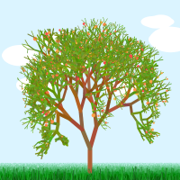
Created 2013-10-27 · saved 2013-10-27
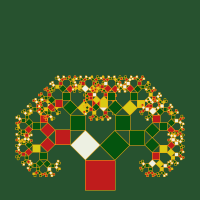
Created 2013-11-03 · saved 2013-11-03
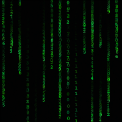
Created 2013-12-08 · saved 2013-12-08
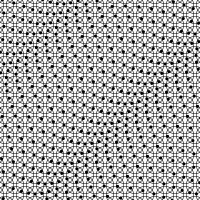
Created 2014-06-11 · saved 2014-06-13
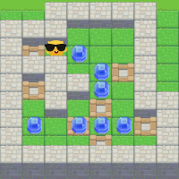
Created 2014-02-23 · saved 2014-02-23
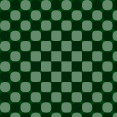
Created 2014-03-08 · saved 2014-03-08
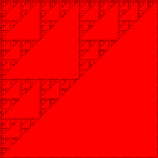
Created 2014-06-14 · saved 2014-06-14
Created 2014-09-11 · saved 2014-09-16
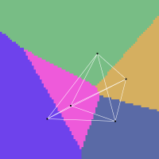
Created 2014-08-12 · saved 2014-08-12
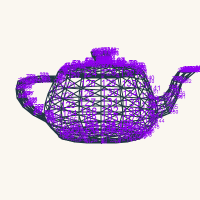
Created 2013-07-16 · saved 2013-07-16
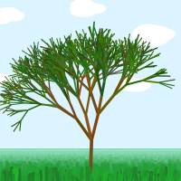
Created 2013-10-31 · saved 2013-11-01
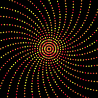
Created 2014-05-19 · saved 2014-06-01
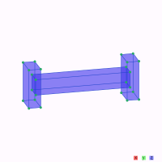
Created 2014-02-25 · saved 2014-02-25
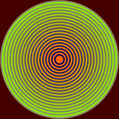
Created 2013-02-07 · saved 2013-02-07
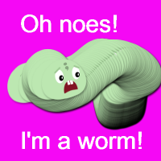
Created 2013-10-20 · saved 2013-10-20
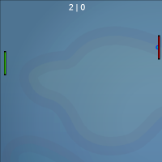
Created 2013-10-20 · saved 2014-06-01
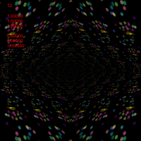
Created 2013-11-05 · saved 2013-11-05
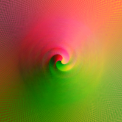
Created 2013-11-04 · saved 2013-11-04
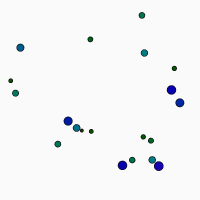
Created 2014-09-15 · saved 2014-09-16
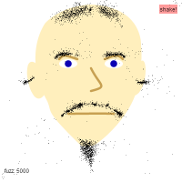
Created 2014-03-24 · saved 2014-08-13
Created 2013-12-19 · saved 2013-12-19
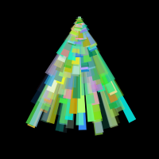
Created 2013-12-23 · saved 2014-06-01
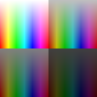
Created 2014-03-22 · saved 2014-06-01
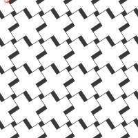
Created 2014-01-26 · saved 2014-01-26
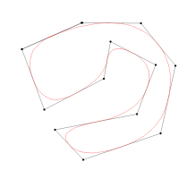
Created 2017-01-21 · saved 2017-01-21
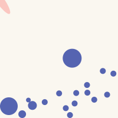
Created 2013-07-14 · saved 2013-07-14
Created 2013-11-28 · saved 2013-11-29
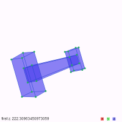
Created 2014-02-27 · saved 2014-03-02
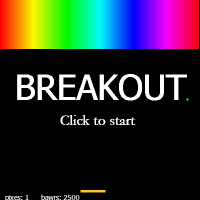
Created 2014-02-21 · saved 2014-02-22

Created 2014-06-15 · saved 2014-06-16
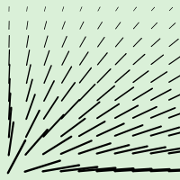
Created 2013-12-18 · saved 2013-12-18
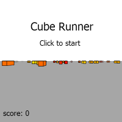
Created 2014-03-04 · saved 2014-03-04
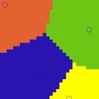
Created 2019-09-03 · saved 2019-09-03
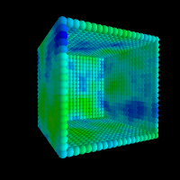
Created 2014-06-16 · saved 2014-06-16
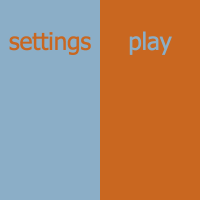
Created 2014-10-17 · saved 2015-12-03
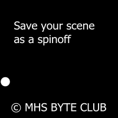
Created 2014-09-23 · saved 2014-11-07
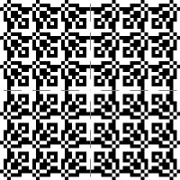
Created 2014-06-23 · saved 2014-06-23
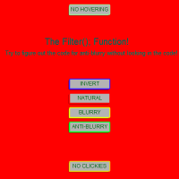
Created 2013-07-08 · saved 2013-07-08
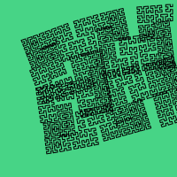
Created 2013-11-01 · saved 2013-11-01
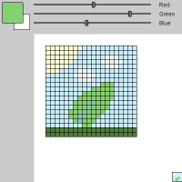
Created 2013-11-05 · saved 2013-11-05
Created 2013-11-05 · saved 2013-11-05
Created 2013-11-25 · saved 2014-02-10
Created 2013-11-27 · saved 2013-11-27
Created 2013-11-27 · saved 2013-11-27
Created 2013-12-02 · saved 2013-12-02
Created 2014-03-26 · saved 2014-03-26
Created 2013-12-20 · saved 2013-12-20
Created 2017-01-10 · saved 2017-01-10
Created 2014-06-14 · saved 2014-06-14
Created 2014-02-06 · saved 2014-02-06
Created 2014-06-23 · saved 2014-06-23
Created 2014-03-25 · saved 2014-03-25
Created 2016-06-30 · saved 2016-06-30
Created 2021-01-13 · saved 2021-01-13
Created 2014-03-26 · saved 2014-03-26
Created 2013-12-15 · saved 2013-12-15
Created 2021-06-13 · saved 2021-06-13
Created 2014-01-12 · saved 2014-01-13
Created 2016-02-15 · saved 2016-02-15
Created 2014-03-08 · saved 2014-03-08
Created 2015-11-18 · saved 2015-11-18
Created 2014-02-16 · saved 2014-02-16
Created 2014-03-08 · saved 2014-03-08
Created 2021-04-10 · saved 2021-04-10
Created 2018-05-06 · saved 2018-05-06
Created 2018-03-16 · saved 2018-03-16
Created 2015-01-02 · saved 2015-01-02

Created 2014-02-21 · saved 2014-02-21

Created 2013-12-20 · saved 2013-12-21
Created 2013-12-21 · saved 2013-12-21
Created 2014-05-30 · saved 2014-05-30
Created 2014-04-27 · saved 2014-04-28
Created 2015-05-10 · saved 2015-05-10
Created 2017-10-10 · saved 2017-10-10
Created 2013-12-15 · saved 2013-12-16
Created 2013-02-08 · saved 2013-07-07
Created 2013-04-14 · saved 2013-04-14
Created 2013-04-14 · saved 2013-07-06
Created 2013-07-07 · saved 2013-07-07
Created 2013-07-14 · saved 2013-07-14

Created 2013-10-13 · saved 2013-10-13
Created 2013-10-13 · saved 2014-06-01
Created 2013-10-13 · saved 2013-10-13
Created 2013-10-15 · saved 2014-06-01
Created 2013-10-16 · saved 2013-10-16
Created 2013-10-20 · saved 2013-10-20
Created 2013-10-20 · saved 2013-10-20
Created 2013-10-20 · saved 2013-10-20
Created 2013-10-20 · saved 2013-10-20
Created 2013-10-28 · saved 2013-10-28
Created 2013-10-27 · saved 2013-10-27
Created 2013-10-27 · saved 2013-10-27
Created 2013-11-04 · saved 2013-11-04
Created 2013-11-10 · saved 2013-11-10
Created 2013-11-25 · saved 2013-11-25

Created 2013-11-26 · saved 2013-11-26
Created 2013-11-26 · saved 2013-11-26
Created 2013-11-27 · saved 2013-11-27
Created 2013-11-29 · saved 2013-11-29
Created 2013-11-28 · saved 2013-11-28
Created 2013-12-02 · saved 2013-12-02
Created 2013-11-29 · saved 2013-11-29

Created 2013-12-08 · saved 2013-12-08

Created 2013-12-08 · saved 2013-12-08

Created 2013-12-08 · saved 2013-12-08

Created 2013-12-08 · saved 2013-12-08

Created 2013-12-12 · saved 2013-12-12

Created 2016-04-08 · saved 2016-04-08

Created 2016-04-15 · saved 2016-04-15
Created 2016-05-31 · saved 2016-06-01
Created 2016-06-01 · saved 2016-06-01

Created 2016-06-02 · saved 2016-06-02
Created 2016-06-30 · saved 2016-06-30

Created 2014-09-12 · saved 2014-09-12

Created 2015-02-15 · saved 2015-02-15

Created 2014-06-27 · saved 2014-07-04

Created 2014-12-01 · saved 2014-12-11

Created 2022-07-10 · saved 2022-07-10

Created 2014-06-24 · saved 2014-06-24

Created 2014-06-13 · saved 2014-06-13

Created 2014-06-15 · saved 2014-06-15

Created 2014-05-27 · saved 2014-05-27
Created 2013-12-22 · saved 2013-12-22

Created 2014-06-23 · saved 2014-06-23

Created 2014-07-05 · saved 2014-07-05

Created 2014-01-15 · saved 2014-01-15
Created 2014-06-14 · saved 2014-06-14
Created 2014-01-13 · saved 2014-01-15
Created 2014-08-10 · saved 2014-08-10

Created 2014-07-05 · saved 2014-07-05

Created 2014-06-08 · saved 2014-06-08
Created 2014-08-14 · saved 2014-08-14
Created 2023-09-07 · saved 2023-09-07

Created 2014-05-27 · saved 2014-05-27

Created 2014-06-03 · saved 2014-06-03

Created 2018-06-13 · saved 2018-06-13
Created 2017-04-09 · saved 2017-04-09

Created 2014-06-03 · saved 2014-06-03

Created 2016-06-30 · saved 2016-06-30

Created 2014-03-26 · saved 2014-03-26

Created 2022-07-10 · saved 2022-07-10

Created 2017-07-14 · saved 2017-07-14

Created 2022-07-10 · saved 2022-07-10

Created 2015-06-16 · saved 2015-06-16
Created 2013-12-16 · saved 2013-12-18

Created 2014-01-08 · saved 2014-01-08

Created 2014-06-14 · saved 2014-06-14

Created 2015-02-15 · saved 2015-02-15

Created 2014-06-15 · saved 2014-06-15

Created 2016-06-30 · saved 2016-06-30

Created 2015-12-18 · saved 2015-12-29

Created 2014-06-24 · saved 2014-06-24

Created 2015-02-08 · saved 2015-02-08

Created 2014-11-18 · saved 2014-11-18

Created 2013-12-20 · saved 2013-12-20

Created 2014-12-01 · saved 2014-12-01

Created 2015-11-10 · saved 2015-11-10

Created 2014-07-07 · saved 2014-07-07

Created 2016-01-04 · saved 2016-01-04

Created 2014-06-22 · saved 2014-06-23
Created 2014-05-21 · saved 2014-06-01

Created 2014-06-11 · saved 2014-06-11

Created 2013-12-21 · saved 2013-12-21

Created 2014-10-21 · saved 2014-10-21

Created 2014-11-18 · saved 2014-11-18
Created 2014-03-26 · saved 2014-03-26
Created 2017-01-22 · saved 2017-01-22

Created 2014-01-12 · saved 2014-01-12

Created 2014-06-26 · saved 2014-06-26
Created 2014-11-14 · saved 2014-11-16

Created 2014-09-23 · saved 2014-09-23

Created 2015-02-15 · saved 2015-02-15

Created 2014-05-28 · saved 2014-05-28

Created 2017-07-14 · saved 2017-07-14

Created 2016-01-23 · saved 2016-01-23

Created 2014-06-13 · saved 2014-06-13

Created 2016-06-19 · saved 2016-06-19

Created 2014-04-28 · saved 2014-04-28

Created 2013-12-21 · saved 2013-12-21
Created 2013-12-15 · saved 2013-12-15

Created 2013-12-20 · saved 2013-12-20
Created 2013-12-21 · saved 2013-12-21

Created 2013-12-20 · saved 2013-12-21

Created 2014-03-25 · saved 2014-03-25

Created 2023-09-07 · saved 2023-09-07

Created 2015-02-15 · saved 2015-02-15

Created 2014-06-14 · saved 2014-06-15

Created 2013-12-21 · saved 2013-12-21
Created 2014-08-10 · saved 2014-08-10

Created 2013-12-20 · saved 2013-12-20

Created 2021-06-12 · saved 2021-06-13

Created 2015-11-26 · saved 2015-11-26

Created 2015-06-09 · saved 2015-06-09

Created 2023-09-07 · saved 2023-09-07

Created 2014-06-23 · saved 2014-06-23

Created 2021-02-19 · saved 2021-02-19

Created 2015-06-09 · saved 2015-06-09

Created 2014-06-18 · saved 2014-06-18

Created 2014-06-23 · saved 2014-06-23

Created 2015-05-28 · saved 2015-05-28

Created 2014-10-22 · saved 2014-10-22

Created 2014-06-23 · saved 2014-06-23

Created 2014-01-07 · saved 2014-01-07

Created 2014-06-01 · saved 2014-06-01
Created 2014-01-07 · saved 2014-01-07

Created 2017-07-14 · saved 2017-07-14

Created 2013-12-20 · saved 2013-12-20

Created 2015-05-28 · saved 2015-05-28

Created 2014-02-20 · saved 2014-02-20

Created 2014-05-30 · saved 2014-05-30

Created 2013-12-17 · saved 2013-12-17

Created 2022-07-10 · saved 2022-07-10

Created 2014-06-15 · saved 2014-06-15

Created 2014-06-23 · saved 2014-06-23

Created 2016-01-23 · saved 2016-01-23

Created 2013-12-22 · saved 2013-12-22

Created 2015-02-15 · saved 2015-02-15
Created 2015-06-09 · saved 2015-06-09
Created 2014-06-23 · saved 2014-06-23

Created 2014-04-28 · saved 2014-04-28

Created 2015-07-13 · saved 2015-07-13

Created 2015-10-12 · saved 2015-10-12

Created 2013-12-20 · saved 2013-12-20

Created 2014-10-19 · saved 2014-10-19

Created 2014-05-27 · saved 2014-05-27

Created 2014-06-12 · saved 2014-06-12

Created 2022-07-10 · saved 2022-07-10

Created 2014-06-05 · saved 2014-06-16
Created 2023-09-07 · saved 2023-09-07

Created 2016-02-08 · saved 2016-02-08
Created 2015-05-28 · saved 2015-05-28

Created 2013-12-21 · saved 2013-12-21

Created 2014-06-15 · saved 2014-06-15
Created 2014-06-23 · saved 2014-06-23

Created 2014-02-24 · saved 2014-02-24

Created 2014-07-05 · saved 2014-07-05

Created 2013-12-18 · saved 2013-12-18
Created 2014-08-14 · saved 2014-08-14

Created 2014-06-08 · saved 2014-06-08

Created 2014-05-27 · saved 2014-05-27

Created 2023-09-07 · saved 2023-09-07

Created 2013-12-21 · saved 2013-12-21

Created 2022-07-10 · saved 2022-07-10

Created 2023-10-05 · saved 2023-10-05

Created 2013-12-28 · saved 2013-12-28

Created 2015-06-21 · saved 2015-06-21

Created 2014-05-23 · saved 2014-05-23

Created 2014-06-23 · saved 2014-06-23

Created 2015-06-09 · saved 2015-06-09
Created 2016-07-19 · saved 2016-07-21

Created 2014-03-09 · saved 2014-03-09

Created 2013-12-21 · saved 2013-12-21

Created 2014-01-12 · saved 2014-01-12

Created 2013-12-22 · saved 2013-12-22

Created 2014-05-27 · saved 2014-05-27

Created 2015-12-15 · saved 2015-12-15

Created 2013-12-19 · saved 2013-12-19

Created 2014-05-27 · saved 2014-05-27
Created 2014-06-11 · saved 2014-06-11

Created 2014-12-02 · saved 2014-12-02

Created 2023-09-07 · saved 2023-09-07

Created 2014-03-10 · saved 2014-03-10
Created 2014-02-23 · saved 2014-02-23

Created 2014-05-13 · saved 2014-05-13

Created 2014-03-22 · saved 2014-03-22

Created 2015-06-09 · saved 2015-06-09

Created 2014-03-26 · saved 2014-03-26

Created 2014-05-23 · saved 2014-05-23

Created 2014-01-15 · saved 2014-01-15

Created 2021-01-13 · saved 2021-01-13
Created 2014-05-19 · saved 2014-06-01

Created 2014-05-11 · saved 2014-05-11

Created 2023-09-07 · saved 2023-09-07

Created 2017-04-14 · saved 2017-04-14

Created 2015-06-16 · saved 2015-06-16

Created 2014-06-18 · saved 2014-06-18

Created 2014-06-11 · saved 2014-06-11

Created 2014-06-23 · saved 2014-06-23

Created 2014-06-16 · saved 2014-06-24

Created 2014-01-12 · saved 2014-01-12

Created 2015-10-12 · saved 2015-10-12

Created 2015-10-12 · saved 2015-10-13

Created 2021-02-19 · saved 2021-02-19

Created 2014-05-27 · saved 2014-05-27

Created 2014-05-30 · saved 2014-05-30

Created 2015-04-23 · saved 2015-04-24

Created 2015-02-17 · saved 2015-02-17
Created 2015-06-01 · saved 2015-06-01

Created 2014-05-19 · saved 2014-06-01

Created 2014-06-01 · saved 2014-06-01

Created 2014-03-11 · saved 2014-03-11

Created 2014-02-21 · saved 2014-02-21

Created 2017-04-09 · saved 2021-02-19

Created 2013-12-23 · saved 2013-12-23

Created 2014-02-17 · saved 2014-02-17

Created 2013-12-23 · saved 2013-12-23

Created 2014-03-25 · saved 2014-03-25
Created 2017-01-20 · saved 2017-01-20

Created 2014-05-27 · saved 2014-05-27

Created 2015-07-13 · saved 2015-07-13

Created 2014-11-22 · saved 2014-11-22

Created 2014-05-14 · saved 2014-05-14

Created 2014-05-13 · saved 2014-05-13

Created 2015-12-15 · saved 2015-12-15

Created 2014-05-13 · saved 2014-05-13

Created 2016-08-02 · saved 2016-08-02

Created 2017-06-30 · saved 2017-06-30

Created 2014-06-23 · saved 2014-06-23

Created 2015-11-14 · saved 2015-11-14

Created 2018-05-05 · saved 2018-05-05
Created 2013-12-21 · saved 2013-12-21

Created 2013-10-20 · saved 2013-10-20